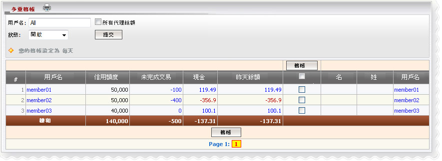

定義:
轉讓是指的金額，需要轉移到發件人為贏輸付款目的。我們有2種轉帳方式：單轉帳或多次轉帳。 你只能轉帳如果您允許轉帳當日，這就是所謂的轉帳條件，其中包括：每日和每周轉帳（周一 - 周日）
注意:

用詞註解:
如何理解报告
從上述的數字，member01 最初給予5萬，他/她的賭注金額100元注單在進行，目前他/她贏得今日和昨日的余額 119.49如何轉帳
在點擊昨日每個會員的余額，使轉帳或列'昨日的檢查，然後點擊'轉帳'按鈕來進行多重轉帳給所有會員昨日的余額是不同的 0